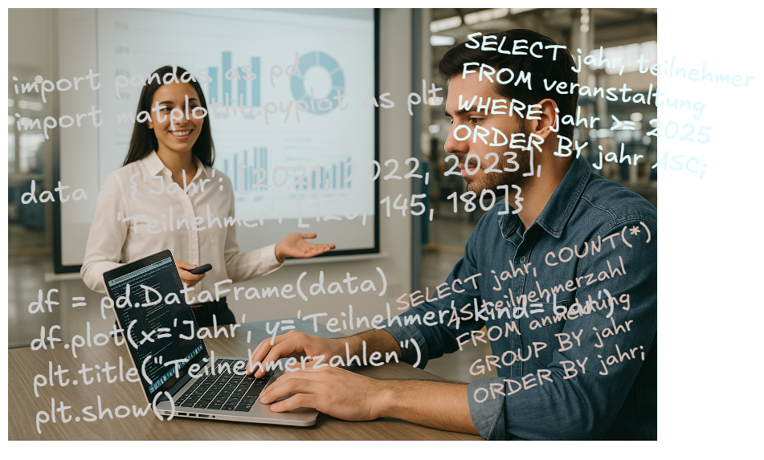

Auswirkungen auf die Lehre

Ziel: Nicht-IT-Fachleuten genau die IT- und Programmierkenntnisse vermitteln, die sie in ihrer Praxis am meisten voranbringen.
Fragen für Didaktik und Auswahl der Lehrinhalte:
- Welchen Nutzen haben Programmierkenntnisse für Nicht-ITler?
- Welche Arten von IT-Kenntnissen sind heute am nützlichsten?
- Was motiviert sie, selbst programmieren zu lernen?
- Welche Prüfungsformate eignen sich?